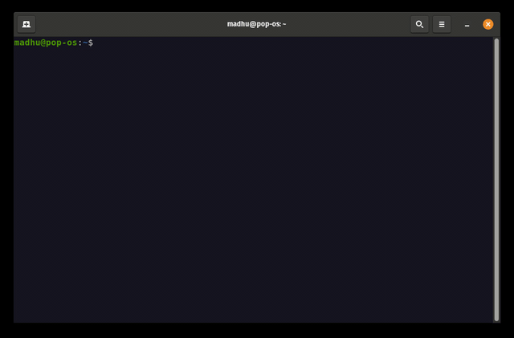

Install Local Python Versions Using pyenv

Download pyenv (Linux Ubuntu)
curl -fsSL https://pyenv.run | bash
Add Configuration to Shell
Add the following lines to ~/.bashrc:
echo 'export PYENV_ROOT="$HOME/.pyenv"' >> ~/.bashrc
echo '[[ -d $PYENV_ROOT/bin ]] && export PATH="$PYENV_ROOT/bin:$PATH"' >> ~/.bashrc
echo 'eval "$(pyenv init - bash)"' >> ~/.bashrc
And also add them to ~/.profile:
echo 'export PYENV_ROOT="$HOME/.pyenv"' >> ~/.profile
echo '[[ -d $PYENV_ROOT/bin ]] && export PATH="$PYENV_ROOT/bin:$PATH"' >> ~/.profile
echo 'eval "$(pyenv init - bash)"' >> ~/.profile
Restart Shell
exec "$SHELL"Example Demonstration
Check Installed Python Versions
pyenv versions
Example output:
* system (set by /home/nikosv/.pyenv/version)
List Available Python Versions
pyenv install -l | less
Install Python 3.12.12
pyenv install 3.12.12
Verify Installed Versions
pyenv versions
Output example:
* system (set by /home/nikosv/.pyenv/version)
3.12.12
Use Python 3.12.12 in a Project
- Enter project directory:
cd myproject/ - Check current Python version:
Example:python3 --versionPython 3.10.12 - Check current Python prefix:
Output:pyenv prefix/usr - Set local Python version to 3.12.12:
pyenv local 3.12.12 - Reload shell configuration:
source ~/.bashrc - Verify project Python versions:
Output example:pyenv versions
Also check prefix:system * 3.12.12 (set by /home/.../.python-version)
Output:pyenv prefix
Check local Python version:/home/nikosv/.pyenv/versions/3.12.12
Output:python3 --versionPython 3.12.12 - Check global Python version outside project:
Output example:cd python3 --version pyenv prefixPython 3.10.12 /usr